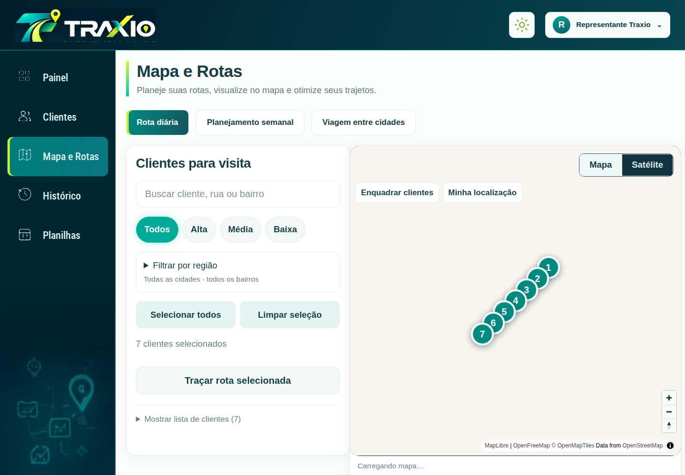
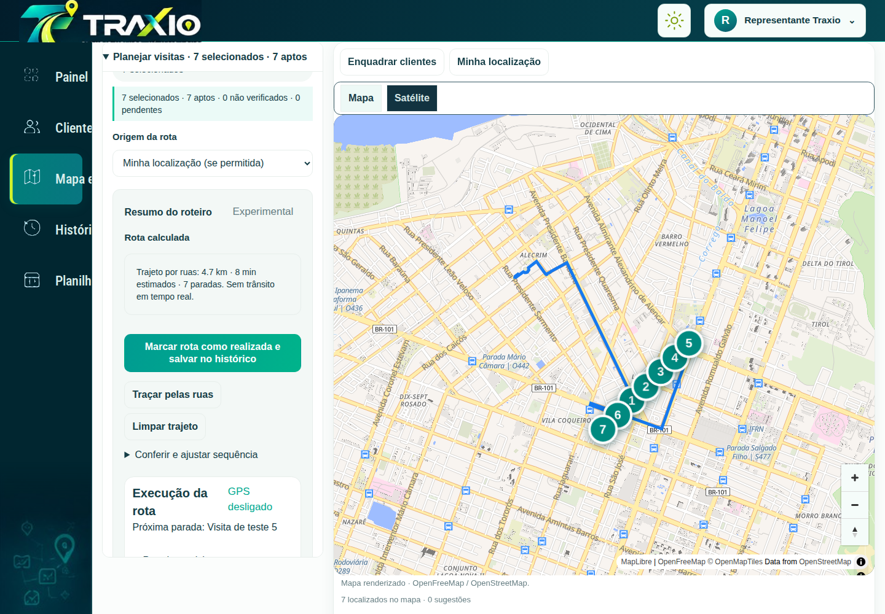
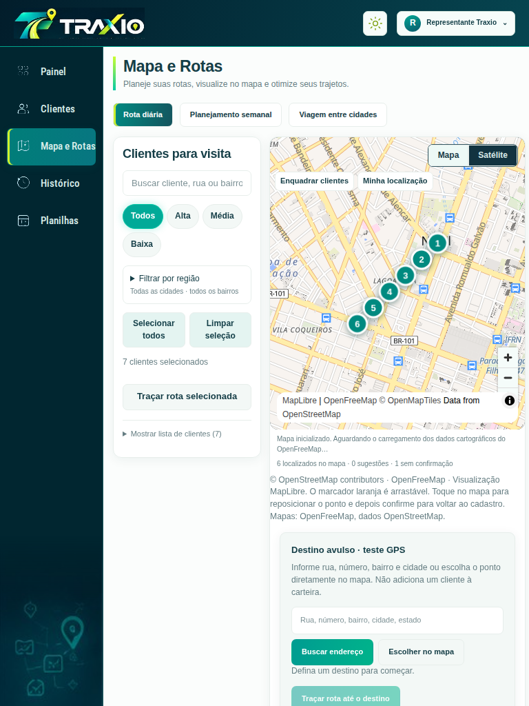
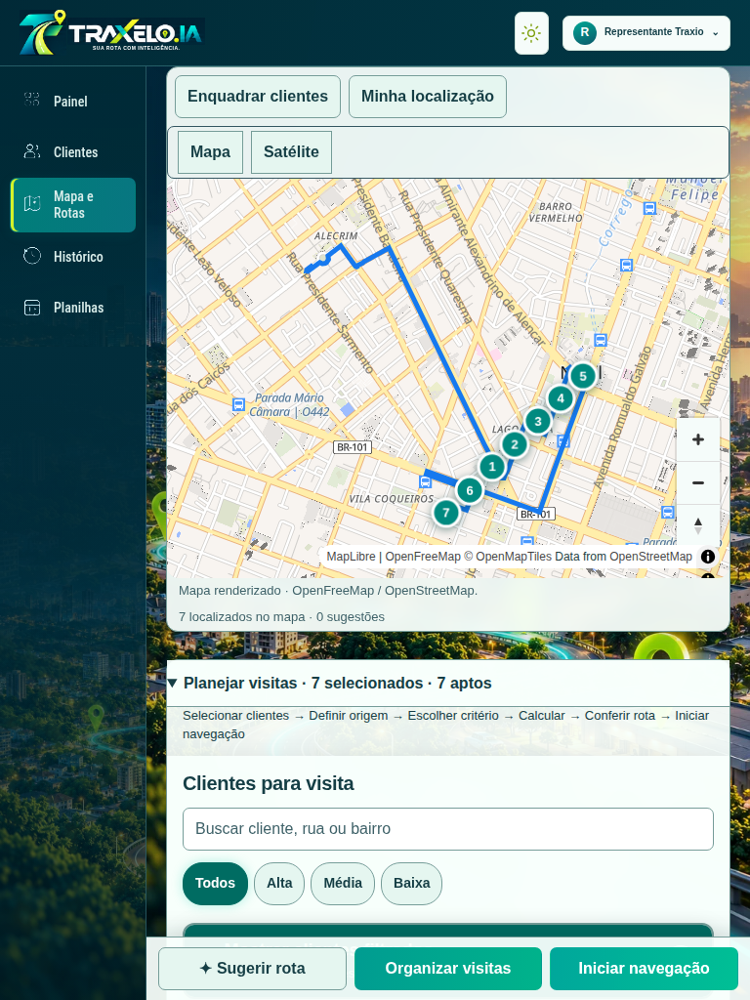
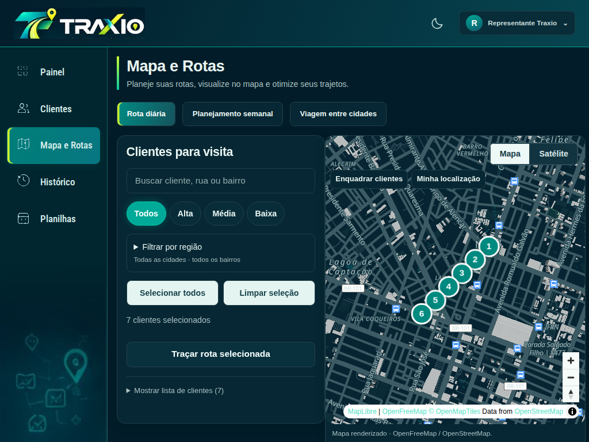
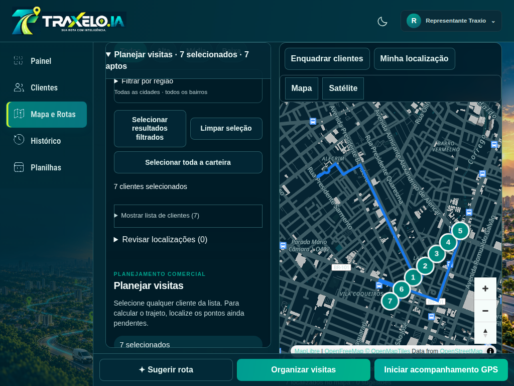
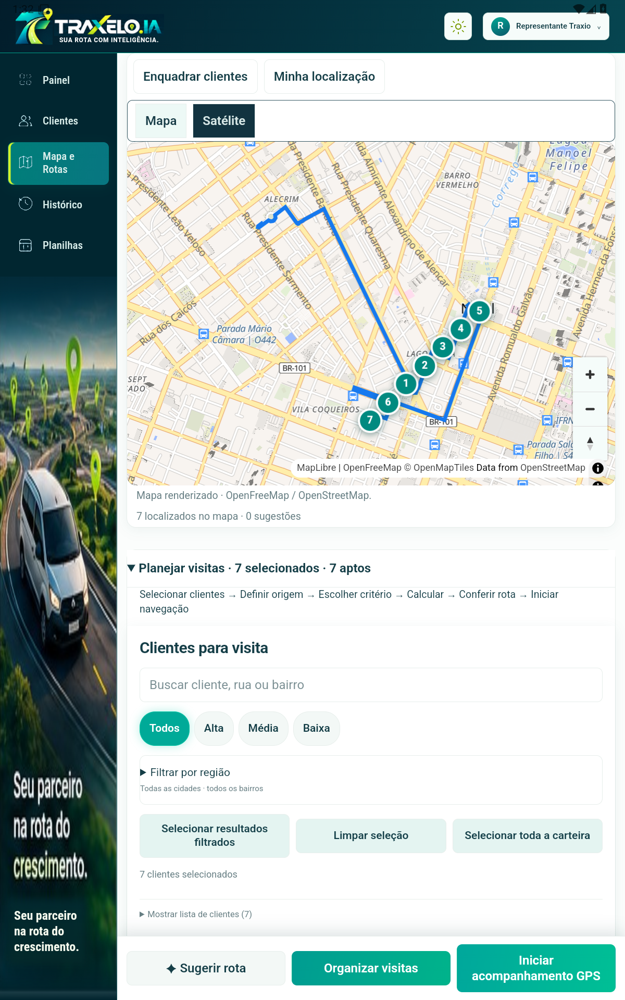
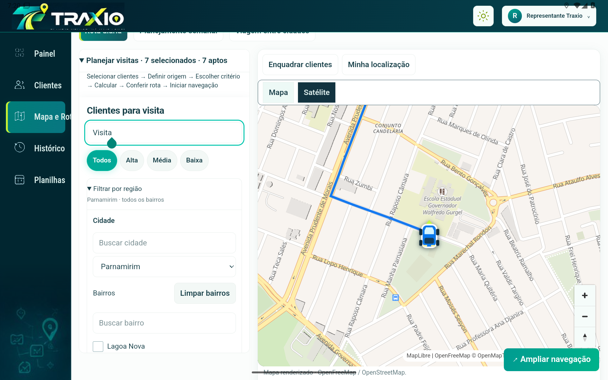

Mapa e Rotas — antes / depois
Capturas reais do navegador. Clientes sintéticos; no depois, matriz e trajeto OSRM e mapa MapLibre reais. Dados comerciais reais preservados.
Relatório, causas, testes e limitações · APK de testes · Abrir aplicação
desktop-light
Antes
Depois
tablet-portrait-light
Antes
Depois
tablet-landscape-dark
Antes
Depois
Android instalado — evidências
Clientes sintéticos e GPS simulado; roteirização e mapa reais. Registro dos testes
Tablet vertical
Tablet horizontal
Campo com teclado aberto · Navegação e recálculo · Encaminhamento ao Google Maps